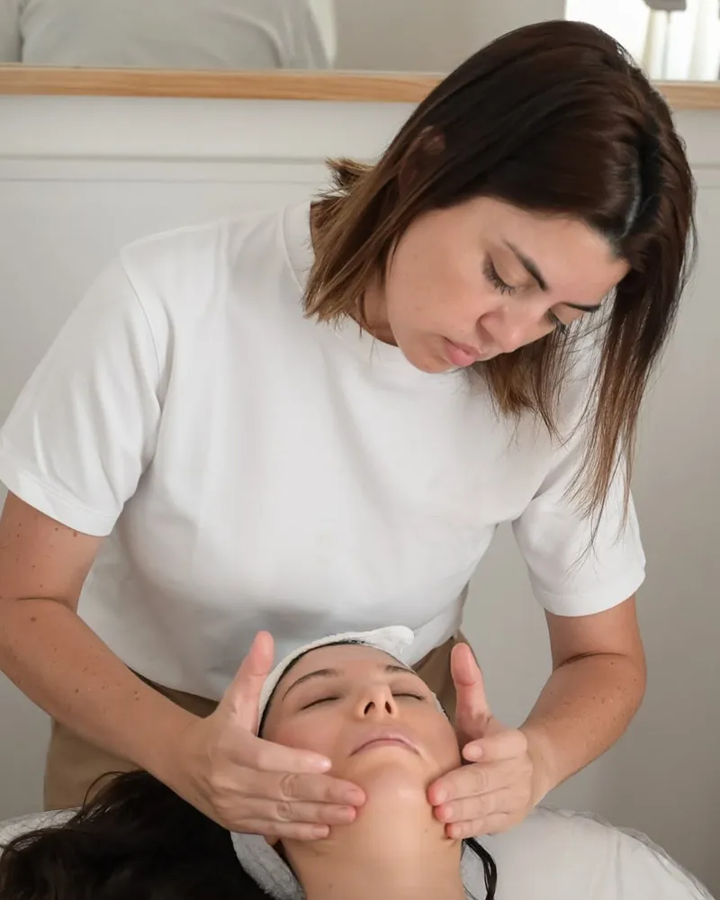
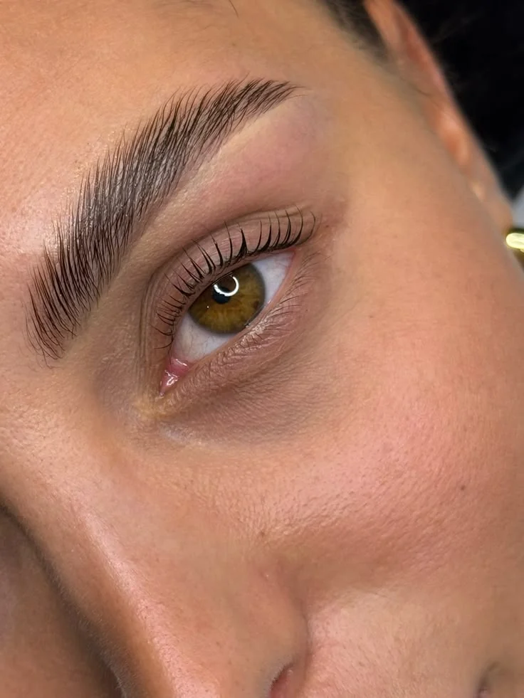

La primera consulta es sin cargo.
Vemos tu piely te decimos
qué necesita, antes de empezar.
Centro oficial Candela
Depilación láser con equipo Candela original y propio, una de las marcas de láser más reconocidas del mundo. Antes de la primera sesión evaluamos tu piel y tu vello.
- Equipo original, con respaldo de la marca
- Aprobado por ANMAT
- Enfriamiento para sesiones más cómodas
- Evaluación previa sin cargo
Nuestros tratamientos
Piel, vello, cejas y pestañas.
Cada uno empieza con una consulta sin cargo
- Equipo Candela
- Rostro y cuerpo
- Evaluación previa
- Manchas de sol
- Unificar el tono
- Tratamientos faciales

Kinesiología dermatofuncional- Cicatrices
- Retención de líquidos
- Pre y post quirúrgico

Cejas y pestañas- Lifting de pestañas
- Diseño de cejas
- Perfilado con hilo
Nuestro equipo
Al frente del centro está la Lic. Ana De La Cruz, junto a un equipo de profesionales con formación en estética y kinesiología dermatofuncional, y aparatología importada propia.
Te explicamos cada paso
antes de empezar
Precios
Dependen de la zona y de la cantidad de sesiones. Escribinos y te pasamos el precio, siempre antes de empezar.
Consultar preciosDepilación láser Candela
- Rostroconsultar
- Axilasconsultar
- Piernasconsultar
- Cavadoconsultar
Faciales
- Tratamiento de manchasconsultar
- Tratamientos facialesconsultar
Kinesiología dermatofuncional
- Cicatricesconsultar
- Retención de líquidosconsultar
- Pre y post quirúrgicoconsultar
Cejas y pestañas
- Lifting de pestañasconsultar
- Diseño de cejasconsultar
- Perfilado con hiloconsultar
Preguntas frecuentes
Lo que más nos consultan
antes de la primera sesión
¿La consulta tiene costo?
No. La primera consulta es sin cargo y sin compromiso. Escribinos por WhatsApp y coordinamos el día.
¿Cuántas sesiones de láser voy a necesitar?
Depende de la zona, del color y grosor del vello y de tu piel. El láser actúa sobre el vello en fase de crecimiento, por eso siempre son varias sesiones espaciadas. En la consulta te decimos cuántas estimamos para tu caso.
¿La depilación láser duele?
La mayoría lo describe como un pinchazo leve y tolerable. El enfriamiento del equipo hace que la sesión sea más cómoda.
¿Cómo me preparo antes del láser?
Rasurá la zona uno o dos días antes. No uses cera ni pinza en las semanas previas, porque el láser necesita la raíz del pelo. Evitá el sol y el autobronceante. Te pasamos las indicaciones completas al darte el turno.
¿Qué cuidados hay que tener después?
Protector solar en la zona tratada, evitar el sol directo y el calor intenso por unos días, y no depilar con cera entre sesiones. Ante cualquier duda, nos escribís.
Dónde estamos
Te esperamos en
Gobernador Irigoyen 12
Trenque Lauquen
Atención con turno previo